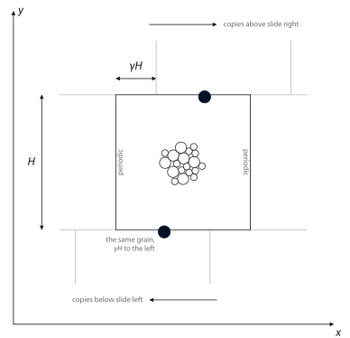

This is a simple shear test of the bonded DEM material used for the plate in the subduction model (no fluid, no walls and no gravity), run with the same Kishino solver. The grains are the same bonded bidisperse discs (radii 0.5 and 0.3 at a packing fraction of 0.86, with every touching pair bonded), and the friction between grains is tan 30°. The box is periodic with Lees-Edwards boundary conditions (Lees and Edwards, 1972), which let the whole box shear without walls. A grain that leaves through the top comes back in through the bottom, shifted sideways by γH (where γ is the shear strain and H the box height).

Each load step shears the box a little (an affine step of Δγ = 5 × 10−5), slides the copies above and below by the new offset, and then relaxes every grain back to equilibrium. Below is a sweep of bond strength (tensile and shear strength set equal, with no scatter) at a fixed bond Young's modulus, with one hundred thousand grains in each box, sheared to γ = 1. Each grain is colored by the cumulative non-rigid motion around it. Weak bonds break everywhere into a dense network of shear bands, and stronger bonds fail along fewer and larger cracks that open up (the white areas are empty space).